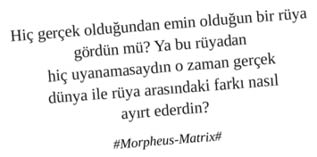

Executive Assistant Ne Yapar?
Üst düzey yöneticinin eşi, dostu, ailesi, sevgilisi, potansiyel sevgilisi ve ilgili yakınları için; doğum günü, yıldönümü, mezuniyet, bayram, seyran, terfi, baby shower, düğün, dernek, cenaze, hastalık, kabotaj okazyonlarının hediye / çiçek / mesaj / mektup / cup cake / meyve sepeti / memleketten çemen / sucuk / kayısı vs gibi süreçlerini organize eder.
Üst düzey yöneticinin, eşinin, dostunun, ailesinin, sevgilisinin, potansiyel sevgilisinin ve ilgili yakınlarının seyahat sürecini organize eder.
Profesyonel Uçuş Planlaması: Gidiş-dönüş business kabinde birinci sıra organizasyonu, priority pass ve golf arabası ile uçuş kapısına yönlendirme, özel uçak ise en yakın havalimanı ve handling operasyonu, uçakta yiyip içilecek malzemeler hakkında kabin ekibinin ve catering firmasının bilgilendirilmesi, business kabininde yer alan diğer yolcuların brief özgeçmişlerinin hazırlanması, uçak tipi ve ilgili uçak tipinin güvenlik önlemlerine dair bilgilendirme yapılması.
Profesyonel Seyahat Brief’i: Gidilecek ülke / şehir / toplantı yapılacak şirket ve çalışanları hakkında detaylı executive summary hazırlanması.
Profesyonel Otel Planlaması: Executive Suite’i ile fark yaratan, fitness merkezinde son model aletler ve profesyonel PT’ler olan, olimpik havuzu olan, profesyonel aşçıları ile damaklarda zengin bir tat bırakan, dünyanın farklı kültürlerini bünyesinde hakkıyla birleştirmiş bir SPA’ya sahip otel organizasyonu.
On-site (sadece ilgili üst düzey yöneticinin kullandığı sabit bir toplantı odası), off-site toplantı (deniz manzaralı, beyin fırtınalarına dayanıklı, valeli bir mekân) ve ikram (ponçik, badem, içine itina ile beyaz peynir ve maydanoz yerleştirilmiş simit, cup cake, egg benedict, granola vb) organizasyonu.
Yöneticinin özeline (oyuncak panda ile uyuması, anlaşma imzaladığı profesyonel kalemi ile ayaklarındaki nasırı karıştırması, BlackBerry’nin kırmızı ışığını görünce vücudunun her yerinin kaşınması, bütün ayakkabılarının içinde yükseltici olması, sürekli sırtına ağda yaptırması vs) ve iş sırlarına (ilk sermayesini altılı kuponundan kazanmış olması, büyük anlaşmalara imza atmadan önce anlaşmanın bir nüshasını Malezya’dan aldığı komodo ejderine yalatması vs) ziyadesiyle vakıf olmak, ilgili sırların korunması hususunda gereken özeni göstermek.
Yöneticinin spontan gelişen ihtiyaçlarına:
“Entegre origami iletişimi hususunda herhangi çalışma var mı? Sen bulursun. Bi bakıver.”
“Sigara var mı? Yoksa aldırsana.”
“Teknede vücut şampuanı bitmiş. Kaptana söyle alsın.”
“Bi filtre kahve alayım. Remzi’ye de ince belli bardakta çay.”
“Oto sanayiden otomatikçi Sebahattin’i bağlayabilir misin?”
“Mini iPad’imi Nairobi’de safaride unutmuşum. Aldırabilir misin?” ivedilikle cevap vermek.
Yöneticiye gelen çağrılara firewall, yöneticiden giden çağrılara proxy olmak.
Konser, maç, at yarışı, horoz dövüşü, defile, müzayede, sergi açılışı, kırkpınar, uzuneşek müsabakaları, halı saha maçı, profesyonel bir konferans gibi etkinliklerin zamanlamasını proaktif olarak takip etmek ve ilgili etkinliklerde VIP’te ve / veya protokolde yer ayırtmak.
Kurumun ve yöneticinin itibarını hakkıyla temsil etmek adına; kılık, kıyafet, bakım, diksiyon, oturma, kalkma, adab-ı muaşeret matematiğine hâkim olmak ve algı yönetimine katkıda bulunmak.
Candy Crash, Farm Ville 2, Diamond Dash, Coaster Ville, Pet Rescue, Bubble Witch, Song Pop, Okey Plus, Angry Birds, Bizim Çiftlik, Soliter gibi oyunlarda ülkesini ve şirketini temsil edecek kadar yetkinlik ve deneyim sahibi olmak.
Kurum çalışanlarının performanslarını insan kaynaklarına göre daha yakından takip etmek, performanslarına dair ölçeklenebilir argümanları toplamak, konjonktürel uygunluk söz konusu olduğunda argümanları ilgili dokümanlarla beslemek ve performansa dair gerekli yorumları yapmak.
Yöneticinin kişisel gelişim serüvenine katma değer sağlayabilmek adına, düzenli olarak yeni çıkan profesyonel kitapların (Delikanlı İnsanın 7 Alışkanlığı, Pikaçu’nun Liderlik Sırları, Negatif Sulardan Pozitif Deniz Yataklarına, Yürrü Koçum Kim Tutar Seni, Atlar gibi Düşünmek Keseli Sıçan gibi Koşmak, İçindeki Hayvanı Uyandır, Ferrari’sine Tüp Taktıran Bilge, Kutup Ayısı Sensin, Düşünce Gücü ve Kaldırma Kuvveti vb) özetlerini çıkarıp sunmak, ilgili podcast’leri ve e-kitapları paylaşmak.
Kurum içerisinde sirküle eden dedikoduların entegrasyon merkezi olmak. Gelen dedikoduları, kurum ve yöneticinin çıkarları doğrultusunda manipüle ederek aktif paydaşlar vesilesi ile etkin yayılımını sağlamak.
Executive Assistant profesyonelleri, yöneticileri için gerçek dünya ile rüya arasındaki farkı ayırt eden, ayırt etmiş oldukları farka dair nefesleri kesilircesine aksiyon alan araf profesyonelleridir.
